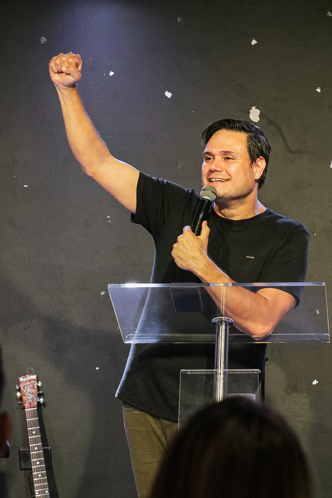
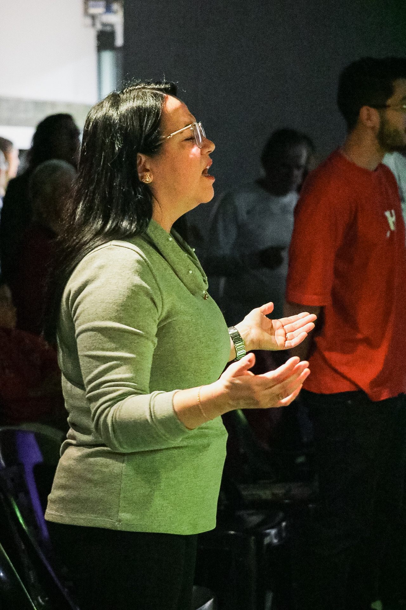

Nossos Pastores

Pastor Eduardo
Pastor Eduardo tem uma jornada incrível na igreja. Com muitos anos de ministério, ele é referência em amor, cuidado e ensino.
Propósito maior! Avivamento! O avivamento é pessoal, é uma força que nos impulsiona a uma escolha! Propósito de Deus! Louveira será um grande celeiro desse avivamento, dessa escolha em nome de Jesus

Pastora Regina
Pastora Regina tem uma jornada incrível na igreja. Com muitos anos de ministério, ela é referência em amor, cuidado e ensino.
Propósito maior! Avivamento! O avivamento é pessoal, é uma força que nos impulsiona a uma escolha! Propósito de Deus! Louveira será um grande celeiro desse avivamento, dessa escolha em nome de Jesus